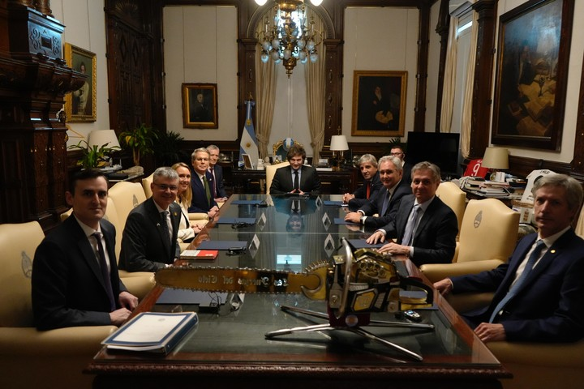

El secretario del Tesoro de Estados Unidos, Scott Bessent, se reunió este lunes con Javier Milei y reafirmó "el pleno apoyo de Estados Unidos a las audaces reformas económicas del Presidente".
A través de un comunicado, el funcionario de Donald Trump que se encuentra en Buenos Aires también elogió la "pronta acción" de la Argentina para, afirmó, "reducir las barreras al comercio recíproco con Estados Unidos".
La visita de Bessent se da días después de que la Argentina llegara a un acuerdo con el FMI por un nuevo préstamo de 20 mil millones de dólares y el Gobierno decidiera el fin del cepo cambiario.
En la previa se había especulado que, en el marco del viaje del secretario al país, podía anunciarse que Estados Unidos pondría a disposición de la Argentina una línea de crédito directa. "Eso no está bajo consideración", aclaró Bessent en una entrevista brindada a la agencia Bloomberg desde Buenos Aires.
En tanto, según se desprende de la información brindada desde el Tesoro de Estados Unidos, el secretario también felicitó a Milei por "las recientes y exitosas negociaciones de Argentina con el Fondo Monetario Internacional (FMI)".
"Y enfatizó la confianza de Estados Unidos en el Presidente Milei para continuar impulsando el impulso económico positivo de Argentina", añadió el texto.
